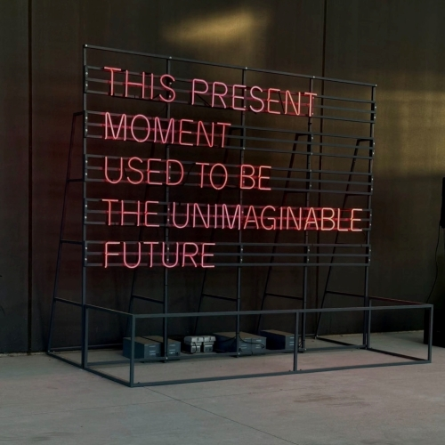
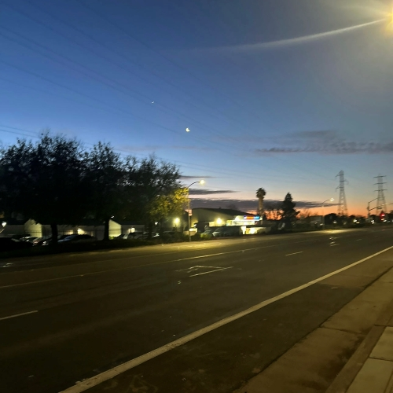
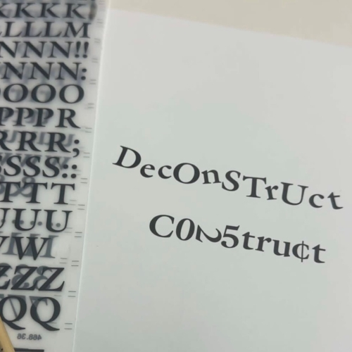
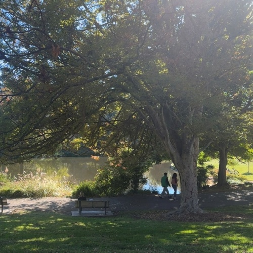
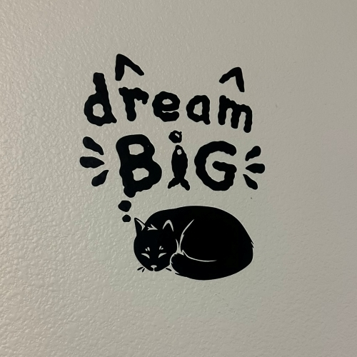

When you feel stuck on a carousel, how do you escape it?

Starting a path where there's no one to guide you can be difficult.. So how do you navigate the unimaginable future?

Put in the effort constantly, don't let anything hold you back. Even when you have to give up some things for others.

Deconstruct any negative from the experience of imposter syndrome. Put all the energy into constructing stronger faith in yourself.

Admire the sceneries around campus, acknowledging that you're seeing something new.

No matter your background, have the ability to dream big about your future. You can do whatever you set your mind to.
Eventually, you'll find the beautiful path right in front of you. You'll head towards the destination you waited for.